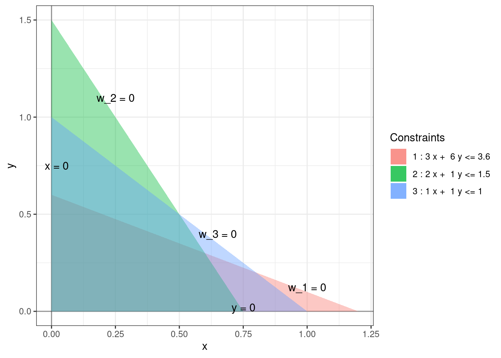

Chapter 2 Standard linear program
A standard linear program is an optimization problem of the following form:
\[\begin{equation} \begin{array}{lrrrrrrrrr} \mbox{maximize: } & c_0 & + & c_1 x_1 & + & \dots & + & c_n x_n & \\ \mbox{subject to: } & & & a_{11} x_1 & + & \dots & + & a_{1n} x_n & \leq & b_1 \\ & & & a_{21} x_1 & + & \dots & + & a_{2n} x_n & \leq & b_2 \\ & & & & & \vdots & \\ & & & a_{m1} x_1 & + & \dots & + & a_{mn} x_n & \leq & b_m \\ & & & x_1, & x_2, & \dots &, & x_n & \geq & 0 \end{array} \tag{2.1} \end{equation}\] where \(c_i\), \(a_{ij}\), and \(b_j\) are real constants. The variables \(x_1, \dots, x_n\) are called decision variables. The set of tuples \((x_1, \dots, x_n)\) that satisfy all the constraints is called the feasible region.
Example 2.1 Equation (1.2) is an example of a standard linear program with 2 decision variables, 3 constraints, and the feasible region being a quadrilateral.
Remark. Not every linear program is standard. However, we will see later that every linear program can be standardized and hence it suffices to construct an algorithm for solving standard linear programs.
We’ll assume the following two theorems without proof for now:
Theorem 2.1 The feasible region of a standard linear program is either empty, or a convex polytope (possibly degenerate or infinite) .
The precise definition of a convex polytope is quite complicated. For the purposes of this class, it is sufficient to think of a polytope as a region that has vertices and edges.
Theorem 2.2 Every standard linear program attains its optimal solution, if any, at one of the vertices of the feasible region.
Note that the above theorem claims neither the existence nor the uniqueness of an optimal solution. All it is saying is that if a maximum objective value exists then it is attained at one of the vertices. It is possible that no optimal value exists or that the optimal value is attained more than one points, possible at a non-vertex.
2.1 Slack variables
For each constraint, we introduce a slack variable by subtracting the LHS from the RHS as follows.
\[\begin{equation} \begin{array}{lrrrrrrrrr} w_1 & = & b_1 & - & a_{11} x_1 & - & \dots & - & a_{1n} x_n \\ w_2 & = & b_2 & - & a_{21} x_1 & - & \dots & - & a_{2n} x_n \\ & & & & & \vdots & \\ w_m & = & b_m & - & a_{m1} x_1 & - & \dots & - & a_{mn} x_n \end{array} \tag{2.2} \end{equation}\] We can think of the slack variable \(w_i\) as measuring the “slackness” in the \(i^{th}\) constraint. The \(i^{th}\) constraint is strictly met exactly when \(w_i\) is zero. Using the slack variables, the linear program (2.1) can be succinctly rewritten as:
\[\begin{equation} w_1, \dots, w_m, x_1, \dots, x_n \geq 0. \end{equation}\]
Example 2.2 The slack variables for the linear program (1.2) are as follows:
\[\begin{equation} \begin{array}{rlllll} w_1 & = & 3.6 & - & 3x & - & 6y \\ w_2 & = & 1.5 & - & 2x & - & y \\ w_3 & = & 1 & - & x & - & y. \end{array} \end{equation}\]
In terms of these slack variables, the constraints can be rewritten as \(x, y, w_1, w_2, w_3 \ge 0\) and the boundaries of the feasible region are given by \(x = 0, y = 0, w_1 = 0, w_2 = 0, w_3 = 0\).

2.2 Basic and non-basic variables
Each vertex of the feasible region of a standard linear program in \(n\) variables is obtained by setting at least \(n\) variables (decision or slack) to zero. These variables are called non-basic and the remaining ones are called basic.
Example 2.3 For the linear program (1.2),
- at the origin: the non-basic variables are \(x, y\) and the basic variables are \(w_1, w_2, w_3\),
- at the optimal solution: the non-basic variables are \(w_1, w_2\) and the basic variables are \(x, y, w_3\).
Remark. Not every vertex obtained by setting \(n\) variables to zero is in the feasible region. For example, the vertex \(x = 0, w_2 = 0\) is not the in feasible region of the linear program (1.2).